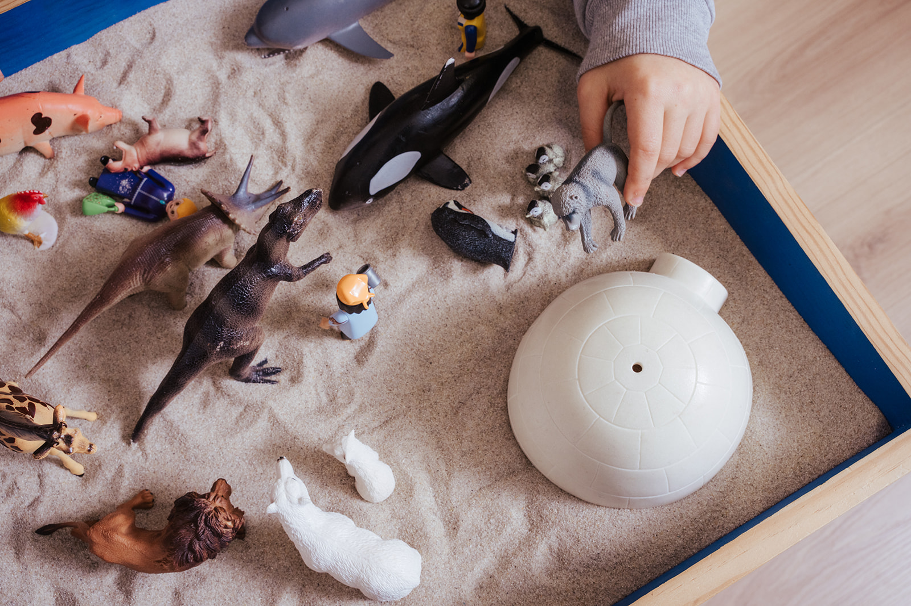
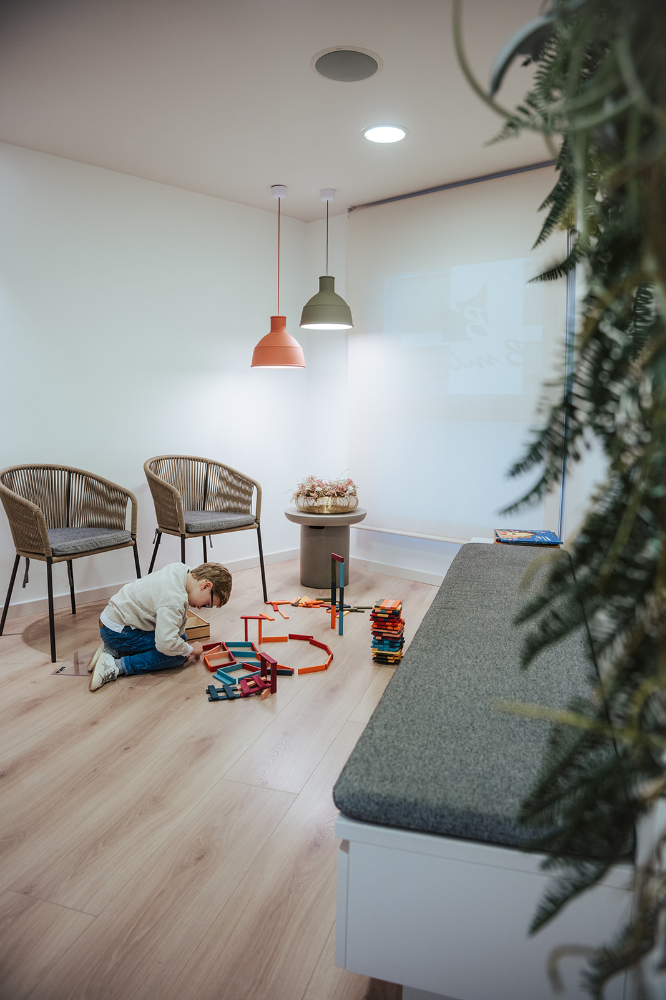
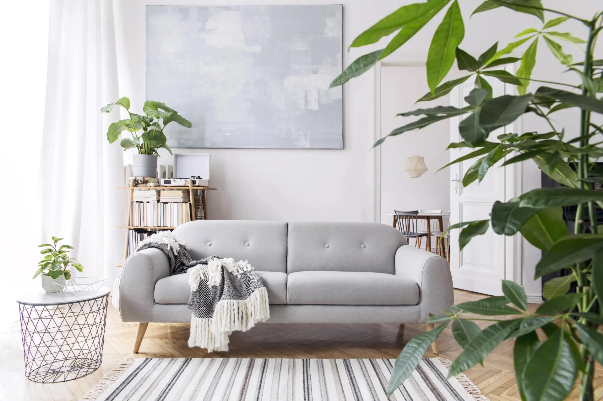
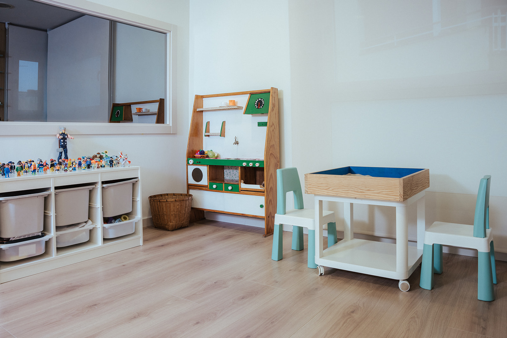

PSICOLOGIA: “Cuidar la ment, també és cuidar la vida”
Índex de continguts
En el servei de psicologia del nostre centre treballem des d’una mirada integradora, humana i respectuosa, posant al centre la persona, la seva història i les seves necessitats emocionals. Entenem la salut emocional com un procés viu i únic, i per això oferim un acompanyament personalitzat tant a infants, adolescents com a famílies.
PSICOLOGIA INFANTIL

L’etapa infantil és clau en el desenvolupament emocional, social i cognitiu. A través del joc, l’expressió emocional i eines adaptades a cada edat, ajudem els infants a comprendre què els passa i a desenvolupar recursos per gestionar les seves emocions i dificultats.
Treballem aspectes com:
- Dificultats emocionals i conductuals
- Ansietat infantil
- Pors i inseguretats
- Baixa autoestima
- Dificultats d’aprenentatge i adaptació escolar
- Problemes de regulació emocional
- Problemes d’enuresi, encopresi
- Neurodivergències: Altes capacitats, alta sensibilitat, (T)DAH,...
- Trastorns de conducta
- Dificultats en les relacions socials
- Processos de separació familiar o dol
- Processos de familiarització
El treball amb les famílies és essencial, ja que entenem l’infant dins del seu entorn afectiu i relacional així que les intervencions entre infants i adults es porten des d’un procés paral·lel.
PSICOLOGIA DE L’ADOLESCENT

L’adolescència és una etapa de transformació intensa, on sovint apareixen conflictes interns, inseguretats i dificultats emocionals. Oferim un espai segur i de confiança perquè els adolescents puguin expressar-se lliurement, entendre el que senten i construir una identitat sana i coherent.
Acompanyem adolescents en situacions de:
- Ansietat i estrès
- Tristesa i simptomatologia depressiva
- Baixa autoestima i inseguretat
- Dificultats relacionals i familiars
- Gestió emocional
- Trastorns de conducta alimentària
- Addiccions a pantalles o conductes compulsives
- Autolesions
- Dificultats escolars o de motivació
- Processos de dol o canvis vitals
Treballem des de l’escolta activa, el respecte i la vinculació terapèutica, adaptant cada procés a les necessitats individuals.
ESSÈNCIA “TORNAR A TU”

El projecte Essència neix amb la voluntat d’acompanyar les persones i les famílies a reconnectar amb els seus orígens per comprendre millor les seves reaccions automàtiques, patrons emocionals i maneres de relacionar-se.
Moltes de les dificultats actuals tenen arrels en experiències viscudes, dinàmiques familiars apreses o ferides emocionals no resoltes. A través d’aquest projecte, proposem un treball profund d’autoconeixement i consciència emocional per identificar aquests patrons i transformar-los des d’una mirada més saludable i compassiva.
Essència és un retorn conscient a allò que som, per entendre d’on venim i poder escollir com volem viure i relacionar-nos.
Acompanyem processos relacionats amb:
- Situacions d’ansietat o estrès familiar
- Depressió
- Estrès
- Trauma emocional
- Bloquejos emocionals
- Processos de Dol
- Baixa autoestima
- Dificultats relacionals
- Trastorns de conducta
- Regulació emocional
- Dependència emocional
- Trastorns alimentaris
- Processos vitals i de creixement personal
Ajudem els progenitors a:
- Comprendre l’origen dels conflictes familiars
- Identificar patrons repetitius heretats
- Millorar la comunicació i l’escolta
- Reforçar els vincles afectius
- Gestionar emocions de manera saludable
- Establir límits conscients i respectuosos
- Comprendre les necessitats emocionals dels infants i adolescents
- Sanar ferides emocionals individuals i familiars
- Construir relacions més sanes, equilibrades i conscients
TERÀPIA FAMILIAR

És un espai d’acompanyament emocional destinat a comprendre les dinàmiques que es generen dins el sistema família i que, sovint, provoquen malestar, conflictes o dificultats en la convivència. Des del nostre centre entenem la família com un sistema viu, on el que afecta a un membre repercuteix, d’una manera o altra, en la resta. No treballem des de la culpa, ni el judici, sinó des de la comprensió, l’escolta i la consciència. L’objectiu és ajudar cada membre de la família a entendre què està passant, com es relaciona amb els altres i quins patrons emocionals o conductuals es repeteixen dins la dinàmica familiar.
Oferim un espai on:
- Millorar la comunicació
- Comprendre els conflictes familiars
- Reforçar els vincles afectius
- Gestionar moments de canvi o crisi
- Treballar els límits i els rols familiars
- Sanar dinàmiques repetitives i patrons heretats
- Processos de separació o reconstrucció familiar
ASSESSORAMENT EN CRIANÇA CONSCIENT

Acompanyem mares, pares i famílies en el procés de criança des d’una mirada respectuosa i conscient. Entenem que educar també implica revisar-nos com a adults, entendre les necessitats emocionals dels infants i construir vincles segurs.
Oferim orientació en:
- Gestió de límits i normes
- Explosió i regulació emocional
- Vinculació afectiva
- Criança honesta
- Dificultats en les rutines
- Arribada de germans/-es
- Gelosia entre germans/-es
- Acompanyament emocional en diferents etapes evolutives
- Comunicació familiar
- Autocura parental
L’objectiu és oferir eines pràctiques i emocionals perquè les famílies puguin viure la criança amb més consciència, calma i connexió.